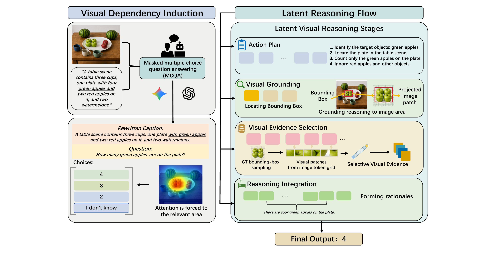

01
Visual Dependency Induction
Mask answer-revealing textual cues and contrast the correct answer with visually plausible distractors, forcing the model to recover the missing fact from the image.
Multimodal large language models often answer visual reasoning questions by relying on linguistic priors rather than task-relevant visual evidence. Textual chain-of-thought reasoning can encourage evidence-seeking, but autoregressive rationale generation increases inference cost. Latent reasoning avoids explicit rationale generation, yet existing approaches provide limited control over what intermediate states encode.
We propose Structured Latent Visual Reasoning (SLVR), a training framework that bridges explicit chain-of-thought and latent reasoning by organizing multimodal reasoning into typed latent stages for planning, grounding, evidence selection, and reasoning integration. SLVR first trains the model to rely on the image through Visual Dependency Induction (VDI), then applies stage-specific latent supervision using plans, boxes, visual evidence, and final rationales. Built on Qwen2.5-VL-7B, SLVR improves consistently across multimodal reasoning benchmarks while avoiding the decoding overhead of textual CoT.

Mask answer-revealing textual cues and contrast the correct answer with visually plausible distractors, forcing the model to recover the missing fact from the image.
Organize hidden computation into functional latent stages for planning, grounding, evidence selection, and integration, with supervision matched to each stage.
| Model | V* Overall | MMVP | BLINK Count | BLINK Jigsaw | BLINK Relation | BLINK IQ | MathVista | ChartQA |
|---|---|---|---|---|---|---|---|---|
| Qwen2.5-VL-7B | 78.5 | 66.7 | 66.7 | 52.0 | 38.8 | 26.0 | 63.7 | 86.2 |
| SLVR (Ours) | 85.2 | 76.1 | 72.4 | 62.3 | 53.0 | 34.5 | 73.4 | 89.6 |
Absolute comparison against the Qwen2.5-VL-7B base model. See the paper for all prior-method baselines and subset results.
The final latent budget uses 64 planning tokens, 16 evidence tokens, and 16 integration tokens.
@inproceedings{gao2026slvr,
title = {SLVR: Structured Latent Visual Reasoning via Human-like Reasoning Flows},
author = {Gao, Albert and Xue, Bing and Zanette, Andrea},
booktitle = {Advances in Neural Information Processing Systems},
year = {2026}
}